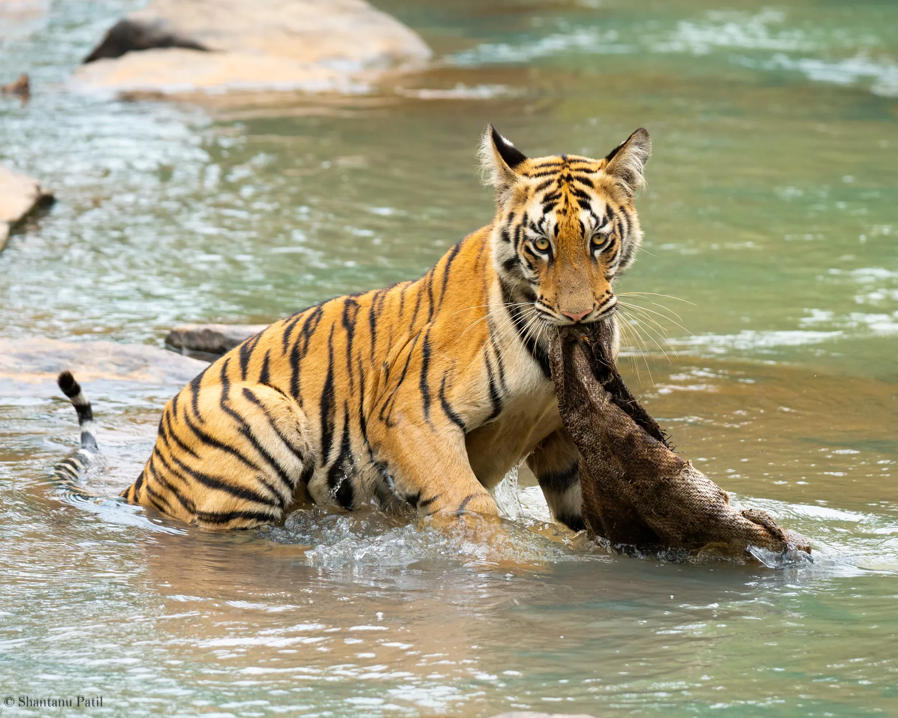
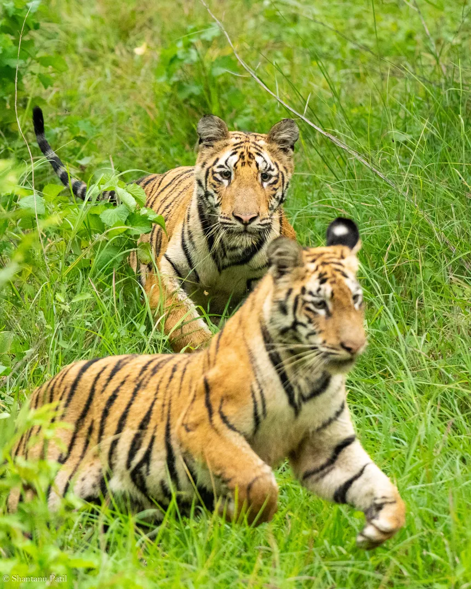

Mammals
- Bengal tiger
- Indian leopard
- Sloth bear
- Dhole (wild dog)
- Gaur
- Chital
- Sambar
- Wild boar
- Jungle cat

Tadoba-Andhari · Maharashtra · Central India
Teak, bamboo and the everyday drama of the wild.
Get to know Tadoba-Andhari
Tadoba feels full of life from the moment the morning begins. Bamboo rustles beside the track. Chital move towards a clearing. Somewhere ahead, a naturalist spots fresh signs in the dust and the conversation becomes quieter. You may see a tiger, or you may leave talking about a sloth bear, a wild dog pack or a bird you had never noticed before.
This is a dry deciduous forest with teak trees, bamboo thickets and water bodies that attract wildlife. It is especially rewarding for travellers who enjoy getting to know one forest over several days rather than rushing between reserves.
An immersive, wildlife-rich reserve with a great deal to notice beyond its famous big cats.
Our journeys are about learning to notice the forest, not chasing wildlife for a photograph. There's always more to discover, even when a tiger stays out of sight.
Plan Your Journey
Wildlife, birds, flora and fauna
These animals and plants belong to the wider reserve ecosystem. They are not a checklist of guaranteed sightings. Your naturalist helps you notice what each safari offers.
Look closely and you may also notice butterflies, insects, fungi and other smaller forest life.
Birdwatching: The reserve lists more than 300 recorded bird species and over 125 butterfly species. It is worth carrying binoculars even if your main interest is big cats.
Habitat: Teak woodland, bamboo, lakes, grassy clearings and dry forest. Different places within a reserve can feel like different forests.
Moments from the forest
A closer look at the animals, birds and landscapes featured in the field collections shared with Weavor. Take your time with the details.
Wildlife photograph
From this reserve collection
Wildlife photograph
From this reserve collection
Wildlife photograph
From this reserve collection
Wildlife photograph
From this reserve collection
Wildlife photograph
From this reserve collection

Wildlife photograph
From the wider India wildlife collection
Photographs marked as part of the wider India wildlife collection are illustrative and are not represented as having been taken in Tadoba-Andhari. Actual wildlife encounters vary by trip.
Understanding tiger country
These numbers describe the reserve and its habitats. They do not predict wildlife encounters or guarantee tiger sightings.
Tadoba-Andhari | Dated assessment and habitat records
The tiger estimate is from the 2022 national assessment, published in 2023, within reserve boundaries. It is not a live count or a sighting guarantee. Species figures are recorded biodiversity totals, not sightings expected on one trip. Read the 2022 report.
Teak woodland, bamboo, lakes, grassy clearings and dry forest.
Understand the landscape
The drier months change how animals use Tadoba's waterholes and lakes. The forest has its own seasonal patterns, from flowering mahua trees to leaves dropping in the summer heat. A good naturalist helps you understand those shifts rather than treating the reserve as a single wildlife-sighting location.
Plan with confidence
We'll help you plan around park regulations, permit availability and sensible travel connections. The right pace matters more than collecting as many drives as possible.
Tadoba changes markedly between the cool season, hot summer and monsoon. Core and buffer access arrangements can differ, so we check the current season, entry gate and permit availability for your dates.
Nagpur is a common airport gateway. Chandrapur is an important nearby rail and road connection. Transfer planning depends on the chosen Tadoba gate and lodge.
We suggest starting with 3 to 5 nights. We'll work out an itinerary that suits your pace, preferred accommodation and other places you hope to visit in India.
Safari permits, entry zones, vehicle arrangements, access restrictions and seasons are determined by the responsible forest authorities. We confirm current rules before you book.
Learn to read the jungle
When you travel with someone who knows the forest, the smallest observations can open up a whole new story.
Look for tiger and leopard tracks on the forest roads while remembering that every sighting is uncertain.
Watch sloth bears, wild dogs and gaur where the habitat allows them to be seen.
Spend time with kingfishers, owls, flycatchers and the smaller life around the lakes.
Before you travel
Not at all. Tadoba also has leopards, sloth bears, dholes, gaur, deer and a remarkable variety of birds, plants and butterflies.
Entry gates serve different zones and lodges. Rather than choosing a gate on reputation alone, we review your dates, permits and preferred accommodation.
Summer can be hot and dry. It can also be an interesting season for wildlife around water, but comfort and park conditions need careful consideration.
It depends on your priorities. Several morning and afternoon drives spread across a three to five-night stay offer a more relaxed introduction.
No. Tigers and other animals are wild, and no sighting is guaranteed. We suggest allowing several drives and staying curious about everything the forest reveals.
Plan your Tadoba-Andhari journey
Tell us about the wildlife you're most interested in, your preferred dates and who you're travelling with. We'll help you explore what a considered Tadoba-Andhari journey could look like.
You don't need to have an itinerary worked out before you enquire.
plan@weavor.meOther forests to discover
The tiger figure shown above is the 2022 national assessment estimate within reserve boundaries, published in 2023. It is not a current live population count, and figures for different reserves may involve different study boundaries or survey methods. Bird and plant figures are species records, not an indication of what one visitor will see. Park operating periods should be checked again before travel.